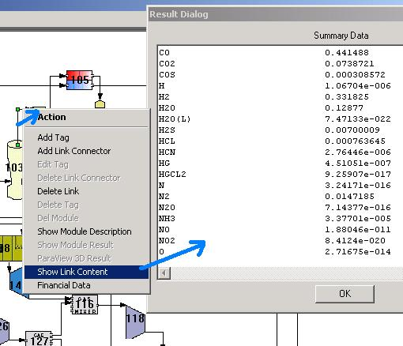
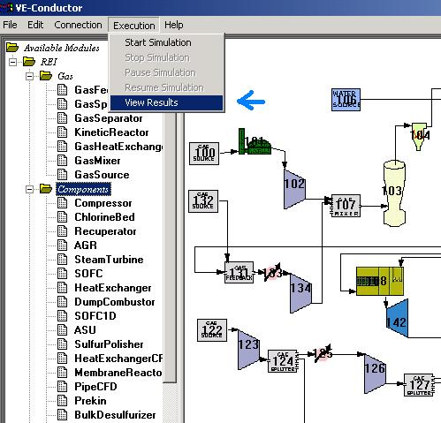

Computation SummariesThe SUM Module Button summons an output table showing the calculated results for a given module. |
|  | Viewing Inlet/Outlet Fluid PropertiesData snapshots can be obtained by right-clicking on either an inlet or outlet connection port. Select "Display Port Contents" from the Port Information menu to summon a screen that outlines fluid characteristics including temperature, pressure, flowrate, density, and composition. The data displayed represents instantaneous characteristics of the fluid at the specified port. |
|

Selecting this button (blue arrow) provides an ordered table (shown above right) of each module's summaries. In addition to the Network Summary screen, two plots further illustrate module outcomes (shown below). |
A System Performance Summary is provided at the end of the Network Summary table and includes information about overall plant efficiency and net plant power. |
The first plot that accompanies the Network Summary shows the exiting gas temperature of each module in order of execution. Grey bars are displayed for those modules that have more than one outlet. The values shown by the grey bars represent the exiting temperature of just one of those outlets (not a sum total). |
The second plot illustrates the power generated (or consumed) by each module. Positive values represent power generated while negative values represent power consumed. Modules are displayed chronologically in order of their execution in the network. |